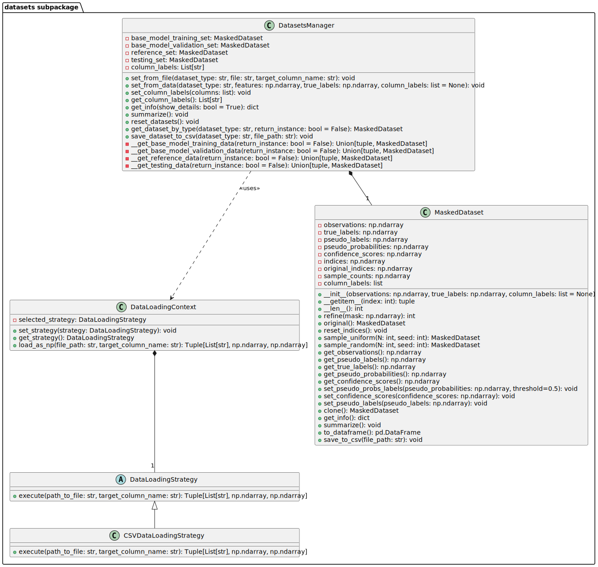

datasets subpackage
Overview
The datasets subpackage is a core component designed to manage the complexities of data handling and preparation.
It provides a structured and extensible way to load, process, and manipulate datasets from various sources,
ensuring they are ready for use in machine learning models or data analysis tasks. The subpackage is built to accommodate a variety of data formats and includes functionalities for masking,
sampling, and managing multiple datasets, making it versatile for different phases of data-driven projects.
This subpackage is composed of the following modules:
loading_context: Manages the strategy for loading data, allowing flexibility in the source file format.
loading_strategies: Implements specific strategies for different file formats.
manager: Coordinates access and manipulations across multiple datasets.
The package includes the following classes:
loading_context module
This module provides a flexible framework for loading datasets from various file formats by utilizing the strategy design pattern.
It supports dynamic selection of data loading strategies based on the file extension, enabling easy extension and maintenance.
It includes the DataLoadingContext class, responsible for selecting and setting the right loading strategy based on the loaded file ectension.
- class det3pa.datasets.loading_context.DataLoadingContext(file_path: str)[source]
Bases:
objectA context class for managing data loading strategies. It supports setting and getting the current data loading strategy, as well as loading data as a NumPy array from a specified file.
- get_strategy() DataLoadingStrategy[source]
Returns the currently selected data loading strategy.
- Returns:
The currently selected data loading strategy.
- Return type:
- load_as_np(file_path: str, target_column_name: str) Tuple[List[str], ndarray, ndarray][source]
Loads data from the given file path and returns it as a NumPy array, along with column labels and the target data.
- Parameters:
file_path (str) – The path to the dataset file.
target_column_name (str) – The name of the target column, such as true labels or values in case of regression.
- Returns:
A tuple containing the column labels, features as a NumPy array, and the target as a NumPy array.
- Return type:
Tuple[List[str], np.ndarray, np.ndarray]
- set_strategy(strategy: DataLoadingStrategy) None[source]
Sets a new data loading strategy.
- Parameters:
strategy (DataLoadingStrategy) – The new data loading strategy to be used.
loading_strategies module
This module provides strategies for loading data from files into usable Python formats, focusing on converting data into NumPy arrays.
It includes an abstract base class DataLoadingStrategy for defining common interfaces and concrete implementations of this class, such as CSVDataLoadingStrategy for handling CSV files.
This setup allows easy extension to support additional file types as needed.
- class det3pa.datasets.loading_strategies.CSVDataLoadingStrategy[source]
Bases:
DataLoadingStrategyStrategy class for loading CSV data. Implements the abstract execute method to handle CSV files.
- execute(path_to_file
str, target_column_name: str) -> Tuple[List[str], np.ndarray, np.ndarray]: Loads CSV data from the given path, separates features and target, and converts them to NumPy arrays.
- static execute(path_to_file: str, target_column_name: str) Tuple[List[str], ndarray, ndarray][source]
Loads CSV data from the given path, separates features and target, and converts them to NumPy arrays.
- Parameters:
path_to_file (str) – The path to the CSV file to be loaded.
target_column_name (str) – The name of the target column in the dataset.
- Returns:
Column labels, features as a NumPy array, and target as a NumPy array.
- Return type:
Tuple[List[str], np.ndarray, np.ndarray]
- class det3pa.datasets.loading_strategies.DataLoadingStrategy[source]
Bases:
objectAbstract base class for data loading strategies. Defines a common interface for all data loading strategies.
- static execute(path_to_file: str, target_column_name: str) Tuple[List[str], ndarray, ndarray][source]
Abstract method to execute the data loading strategy.
- Parameters:
path_to_file (str) – The path to the file to be loaded.
target_column_name (str) – The name of the target column in the dataset.
- Returns:
A tuple containing the column labels, features as a NumPy array, and the target as a NumPy array.
- Return type:
Tuple[List[str], np.ndarray, np.ndarray]
- Raises:
NotImplementedError – If this method is not overridden by subclasses.
manager module
The manager.py module manages datasets for machine learning workflows, particularly for Detectron and Med3pa methods.
It includes the DatasetsManager class for handling training, validation, reference, and testing datasets, and the MaskedDataset class for data masking and sampling.
This module streamlines data organization for various training and validation stages.
- class det3pa.datasets.manager.DatasetsManager[source]
Bases:
objectManages various datasets for execution of detectron and med3pa methods.
This manager is responsible for loading and holding different sets of data, including training, validation, reference (or domain dataset), and testing datasets (or new encountered data).
- get_base_model_training_data(return_instance: bool = False)[source]
Retrieves the training dataset.
- Parameters:
return_instance (bool, optional) – If True, returns the MaskedDataset instance; otherwise, returns the features and true labels. Defaults to False.
- Returns:
The features and true labels if return_instance is False, otherwise the MaskedDataset instance.
- Return type:
Union[tuple, MaskedDataset]
- Raises:
ValueError – If the base model training set is not initialized.
- get_base_model_validation_data(return_instance: bool = False)[source]
Retrieves the validation dataset.
- Parameters:
return_instance (bool, optional) – If True, returns the MaskedDataset instance; otherwise, returns the features and true labels. Defaults to False.
- Returns:
The features and true labels if return_instance is False, otherwise the MaskedDataset instance.
- Return type:
Union[tuple, MaskedDataset]
- Raises:
ValueError – If the base model validation set is not initialized.
- get_column_labels()[source]
Retrieves the column labels of the manager
- Returns:
A list of the column labels extracted from the files.
- Return type:
List[str]
- get_reference_data(return_instance: bool = False)[source]
Retrieves the reference dataset.
- Parameters:
return_instance (bool, optional) – If True, returns the MaskedDataset instance; otherwise, returns the features and true labels. Defaults to False.
- Returns:
The features and true labels if return_instance is False, otherwise the MaskedDataset instance.
- Return type:
Union[tuple, MaskedDataset]
- Raises:
ValueError – If the reference set is not initialized.
- get_testing_data(return_instance: bool = False)[source]
Retrieves the testing dataset.
- Parameters:
return_instance (bool, optional) – If True, returns the MaskedDataset instance; otherwise, returns the features and true labels. Defaults to False.
- Returns:
The features and true labels if return_instance is False, otherwise the MaskedDataset instance.
- Return type:
Union[tuple, MaskedDataset]
- Raises:
ValueError – If the testing set is not initialized.
- set_base_model_training_data(training_file: str, target_column_name: str) None[source]
Loads and sets the base model training dataset from a file.
- Parameters:
training_file (str) – The file path to the training data.
target_column_name (str) – The name of the target column in the dataset.
- set_base_model_validation_data(validation_file: str, target_column_name: str) None[source]
Loads and sets the base model validation dataset from a file.
- Parameters:
validation_file (str) – The file path to the validation data.
target_column_name (str) – The name of the target column in the dataset.
- class det3pa.datasets.manager.MaskedDataset(features: ndarray, true_labels: ndarray, mask=True, pseudo_labels: ndarray = None, pseudo_probabilities: ndarray = None)[source]
Bases:
DatasetA dataset wrapper for PyTorch that supports masking and sampling of data points.
- clone() MaskedDataset[source]
Creates a clone of the current MaskedDataset instance.
- Returns:
A new instance of MaskedDataset containing the same data and configurations as the current instance.
- Return type:
- get_features() ndarray[source]
Gets the pseudo labels of the dataset.
- Returns:
The pseudo labels of the dataset.
- Return type:
np.ndarray
- get_pseudo_labels() ndarray[source]
Gets the pseudo labels of the dataset.
- Returns:
The pseudo labels of the dataset.
- Return type:
np.ndarray
- get_pseudo_probabilities() ndarray[source]
Gets the pseudo probabilities of the dataset.
- Returns:
The pseudo probabilities of the dataset.
- Return type:
np.ndarray
- get_true_labels() ndarray[source]
Gets the true labels of the dataset.
- Returns:
The true labels of the dataset.
- Return type:
np.ndarray
- original() MaskedDataset[source]
Creates a new MaskedDataset instance with the original dataset without any applied mask.
- Returns:
A new instance of the dataset with the original data.
- Return type:
- refine(mask: ndarray) int[source]
Refines the dataset by applying a mask to select specific data points.
- Parameters:
mask (np.ndarray) – A boolean array indicating which data points to keep.
- Returns:
The number of data points remaining after applying the mask.
- Return type:
int
- Raises:
ValueError – If the length of the mask doesn’t match the number of data points.
- sample(N: int, seed: int) MaskedDataset[source]
Samples N data points from the dataset, prioritizing the least sampled points.
- Parameters:
N (int) – The number of samples to return.
seed (int) – The seed for random number generator.
- Returns:
A new instance of the dataset containing N random samples.
- Return type:
- Raises:
ValueError – If N is greater than the current number of data points in the dataset.
- set_pseudo_probs_labels(pseudo_probabilities: ndarray, threshold=0.5) None[source]
Sets the pseudo probabilities and corresponding pseudo labels for the dataset. The labels are derived by applying a threshold to the probabilities.
- Parameters:
pseudo_probabilities (np.ndarray) – The pseudo probabilities array to be set.
threshold (float, optional) – The threshold to convert probabilities to binary labels. Defaults to 0.5.
- Raises:
ValueError – If the shape of pseudo_probabilities does not match the number of samples in the features array.